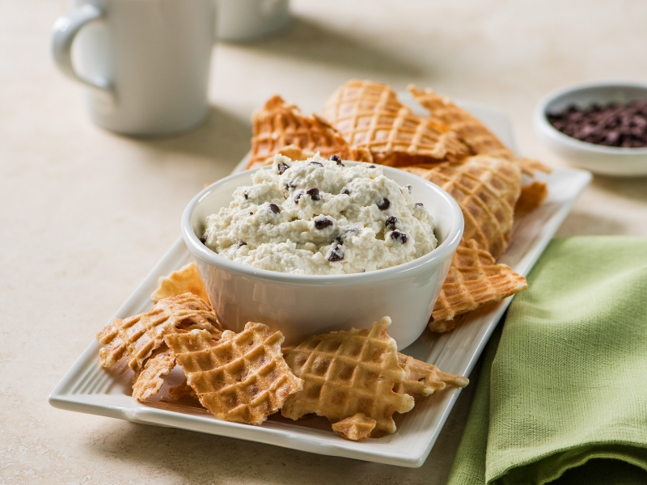

Cannoli Dip

Easy cannoli dip
Turn your favorite dessert into an easy, time-saving party snack. It's sure to be a crowd pleaser!
Prep time:10 min
Additional:10 min
Total:20 min
Ingredients:
Dip
- 2 cups ricotta cheese drained
- 1 (8oz) package cream cheese, softened*
- 1 1/2 cups confectioners' sugar
- 1 teaspoon vanilla extract
- 1 cup miniature semisweet chocolate chips
- lemon zest to taste
*can substitute cream cheese for 1 (8 oz) tub mascarpone cheese
Serving Options
- waffles cones broken in to chip size pieces
- nilla wafers
- graham crackers (honey or chocolate)
- biscoff cookies
- strawberries
Steps:
- Combine ricotta cheese and cream cheese (or mascarpone) in bowl and mix until smooth; add sugar and vanilla. Continue stirring until sugar is completely incorporated. Fold in chocolate chips and lemon zest until well-blended.
- Cover bowl and place in refrigerator until chilled, at least 10 minutes.